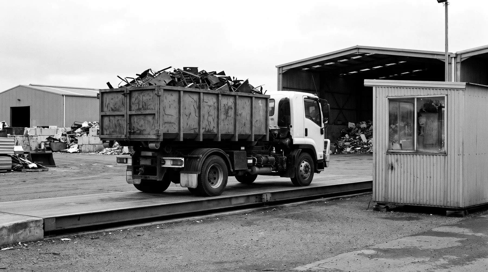

Reporting
Every tonne on the record.
Every load crosses our weighbridge, so you know exactly what left your site and what it weighed. The docket comes to you, and environmental reporting runs through YARTA.
The docket
Weighed, not guessed.
Guide weights help you plan. The weighbridge settles it: the truck is weighed full and empty, and the difference is the weight of your metal.
- Gross
- The truck with your load on board.
- Tare
- The same truck, empty.
- Net
- Gross minus tare: the weight of your metal.
- Docket
- No. 000000
- Date
- DD / MM / YYYY
- Customer
- Your business
- Site
- Your site, VIC
- Material
- Mixed steel
- Gross
- 16,240 kg
- Tare
- 10,980 kg
- Net
- 5,260 kg
Environmental reporting through YARTA

Environmental reporting
Reporting through YARTA.
Environmental reporting through YARTA Environmental Sustainability, a Recycle Group initiative. Ask Nigel what reporting suits your business when you ask for a quote.
- A weighbridge docket for every load
- Your collections recorded in one place
- Useful for your own environmental reporting, waste records and audits
IT and data
Drives out before we come.
We collect server racks, computers and cabinets as scrap metal. We don't take data-bearing drives, so remove or wipe drives and SSDs before collection.
- Before we come
- Drives and SSDs removed or wiped.
- Batteries
- Out of equipment and kept apart. They travel separately, and we take them too.
- On the docket
- The weight of every load we take away.